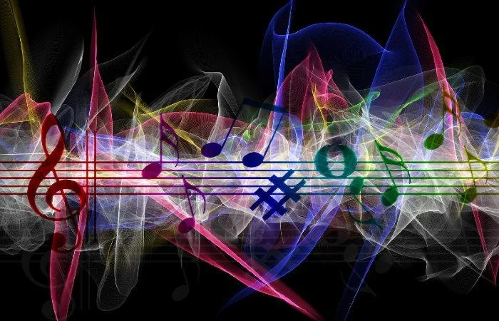

En la actulidad el rock y el metal siguen siendo generos de musica que aun se escuchan, aun que desde el año 2010 la industria musical ha impulsado otros generos como el pop y el regaeton ya que buscan ventas. Desde mediados de esta epoca las aplicaciones de musica como youtube, spotify y apple music han ganado dinero con la publicidad o suscribción de los usuarios, la musica mas eschuchada en la actulidad es el pop y el regaeton.
